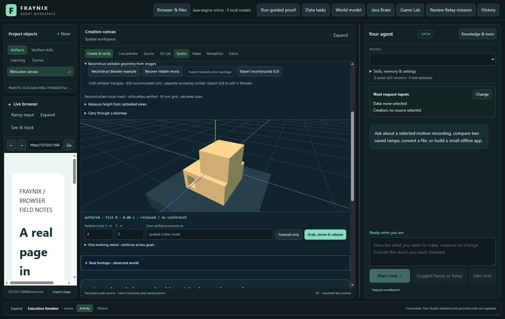
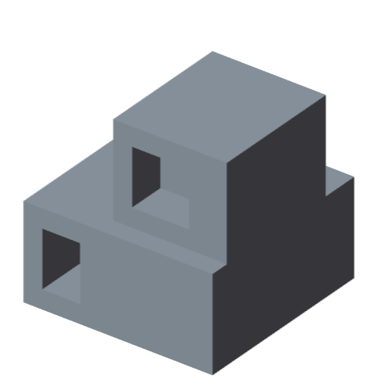

Recover a hidden recess with Blender depth
Blender first hits expose the bracket recess, and a separate mesh verification checks the editable result.
Depth recovered a 100 mm recess and removed 18 cells. Blender checked 196 independently positioned rays and the original mesh.

The silhouette reconstruction leaves the upper recess filled
Blender depth reveals the upper recess in Fraynix
The actual first-hit depth samples
Withheld oblique view of the original Blender bracket

Independent Blender render of the exported reconstruction
System files
Open source